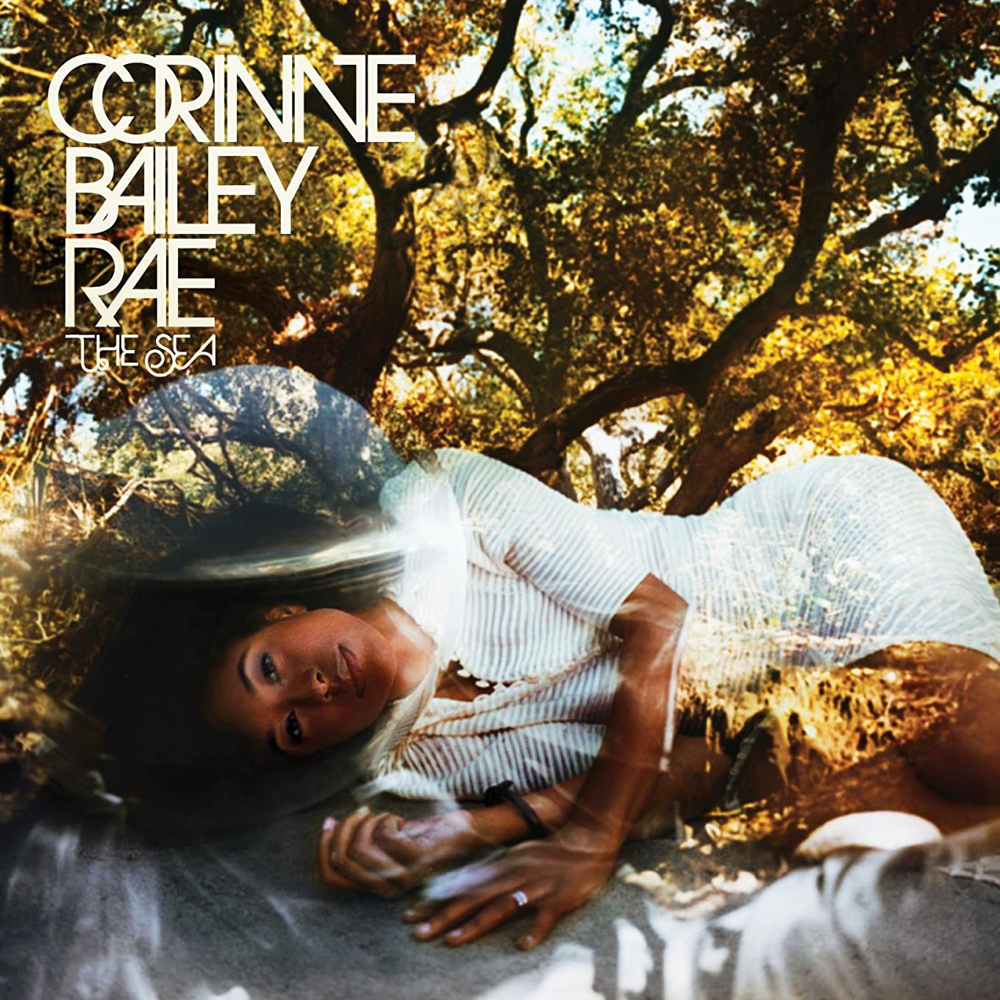

Bathys / Display lettering / 01Circles. Intersections. Quiet electricity.
BATHYS
A geometric display face drawn around circular bowls, taut diagonals and interlocking capitals. Developed from the lettering on The Sea and The Love EP, with an extended alphabet and optical small caps.
A little sea. A little outer space.WE ORBIT
THE SAME SUN.
and carry the sea into the stars
02 / The alphabet
ABCDEFG
HIJKLMN
OPQRSTU
VWXYZ
0123456789
.,:;!? & / + = ( )
Optical small capitals — 74% height, stronger relative strokesabcdefghijklm
nopqrstuvwxyz
03 / The interlocks — ordinary spacing above, ligature below
CO, OR, COR, BA and RA are standard ligatures. OO, OC, RO and LA are discretionary. The three-letter COR prevents competing CO and OR substitutions from breaking the album’s opening word.
04 / Rhythm, colour & difficult neighbours
AVATAR / WAVE / TOY
NOON / MINIMUM / ORBIT
LOVE / RARE / CORONA
THE NIGHT IS A SLOW OCEAN.
SOMEWHERE, THE STARS ARE STILL LISTENING.
Corinne Bailey Rae / The Sea
05 / Reference study

The Sea — circular CO, overlapping OR, diagonal A and R. The Love EP — the same construction, rotated and rendered in metal.
The Love EP — the same construction, rotated and rendered in metal.The artist-name capitals are the design reference. The handwritten album subtitles are a separate lettering style. Letters absent from the covers, numerals, punctuation and small caps are new extensions; this is a reconstruction, not the original production font.